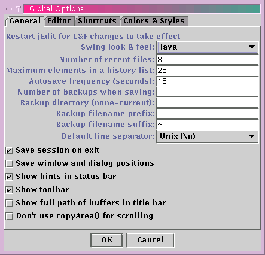
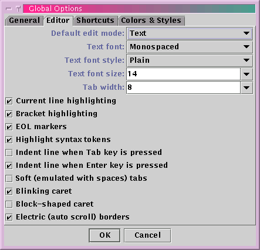
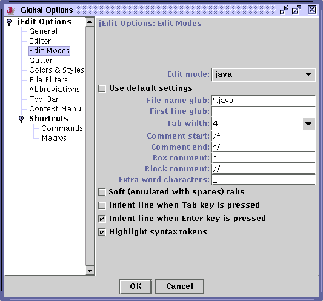
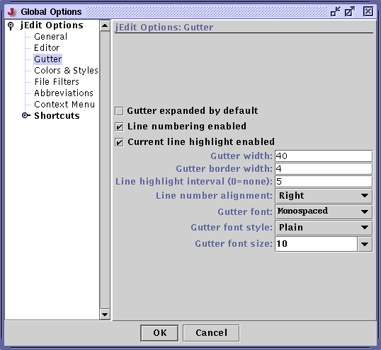
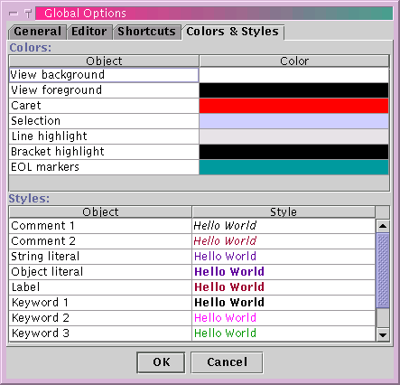
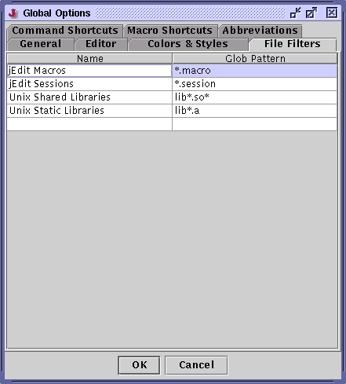
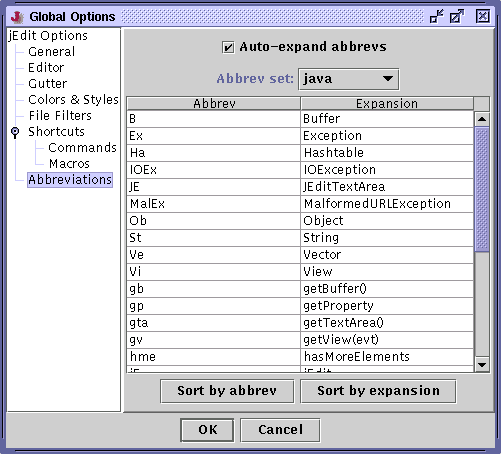
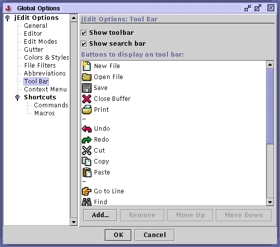
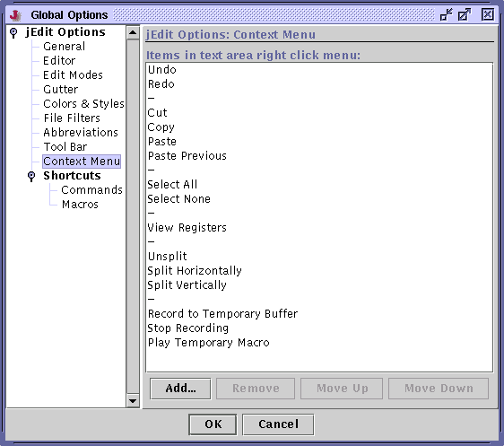
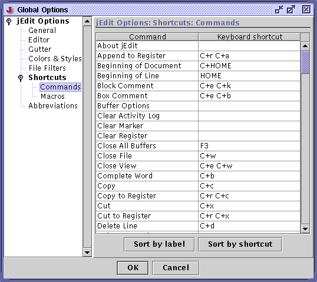

The Global Options Dialog Box
Utilities>Global Options displays the global options dialog box. A whole slew of settings can be customized here. The dialog box is divided into several panes, each pane containing a set of related options. To switch between panes, use the list on the left of the dialog box. Only panes created by jEdit are described here; some plugins add their own option panes, and information about them can be found in the plugin documentation.
The General Pane
The General pane allows you to change the following settings:
The Swing look and feel - changes to this setting only take effect after jEdit is restarted
Number of recent files to list in the File>Recent Files menu
The file encoding used when loading and saving files - you can enter any encoding supported by your Java version here, not just the ones in the list
The autosave frequency, in seconds - see the section called Saving Files in Chapter 3
The maximum number of entries to store in a history list. History lists are used by the search and replace features to store previously entered search strings. They are also used by the Paste Previous command. See the section called History Text Fields in Chapter 7, the section called The Clipboard in Chapter 3 and the section called Registers in Chapter 4.
Number of backups to make when saving buffers - if this is set to "0", no backups will be made at all. If set to "1", only one backup will be made. Values higher than "1" will cause numbered backups to be enabled, with higher numbers being the older versions
The backup directory - if not set, backups will be created in the current directory
Backup filename prefix - if set, the specified string will be prepended to backup filenames
Backup filename suffix - if set, the specified string will be suffixed to backup filenames - at least one of the backup prefix and suffix must be set, otherwise interesting things will happen...
Default line separator - the line separator/end of line characters that will be used for new files. Existing files will always use whatever line separator they were found to have on loading. See the section called Saving Files in Chapter 3
If the current session should be automatically saved when jEdit exits and restored when it starts up. See the section called Saving and Loading Sessions in Chapter 4
If buffer switching tabs should be shown
If the full path of buffers should be shown in view title bars, instead of just the name
If the buffer list should be sorted
If the buffer list should be sorted by file name, rather than full path name
If jEdit should check if buffers have changed on disk every time it gets focus
If jEdit should parse files for syntax information when they are being loaded. This results in slower file loading, more more accurate highlighting of multi-line tokens
The Editor Pane
The Editor pane allows you to change the following settings:
Default edit mode for new files
The text font
The font size
Default font style
Default tab width
Undo queue size
If the line with the caret should be drawn with a different background
If matching brackets should be highlighted
If a faint dot should be drawn at the end of each line
If lines that are visible but are not actually in the buffer should be drawn as red tildes
If syntax highlighting should be performed
If the current line should be indented when Tab is pressed - see the section called Automatic Indent in Chapter 6
If the correct indentation should automatically be inserted when Enter is pressed - see the section called Automatic Indent in Chapter 6
If spaces should be used instead of "real" tabs for indentation - see the section called Soft Tabs in Chapter 6
If the caret should blink
If the caret should be drawn as a block or a vertical line
If placing the caret on the first three or last three visible lines should automatically scroll
In the Home and End should move the caret to the start/end of the viewport and buffer when pressed repeatedly - see the section called The Caret in Chapter 3
The Gutter Pane
The Gutter pane allows you to change various settings used by the gutter. Colors used by the gutter can be set in the Colors & Styles option pane.
The Edit Modes Pane
The Edit Modes pane allows you to change a subset of the global editor settings on a per-mode basis. The combo box labelled "edit mode" selects the edit mode whose settings are to be changed. If the "use default settings" check box is selected, the edit mode will use the global editor settings. Otherwise, the settings can be customized and they will only apply to this mode.
The "file name glob" and "first line glob" fields allow you to specify a glob pattern that names and first lines of buffers will be matched against. The remaining fields and flags are the same as in the Editor pane.
Changes to the tab size setting in this option pane only take effect in newly opened files. All other settings take effect immediately.
This option pane does not change mode definition files on disk; it merely writes values to the user properties file which override those in mode files. To find out how to edit mode files directly, see Chapter 5.
The Colors & Styles Pane
The Colors & Styles pane allows you to change various colors used by the text area, and the text styles used by syntax highlighting. Clicking on a color or style will display the appropriate editor for changing it.
The File Filters Pane
The File Filters pane allows you to add custom file filters to the open file and save dialog boxes. Note that only user-defined file filters can be added and changed here; filters used to pick a file's edit mode can be changed in the Edit Modes pane.
Filters are added and removed in a rather peculiar fashion in this pane. Changing the last line in the list (which is always blank) will add another blank line. Lines with empty names or globs will be ignored when the filters are being saved.
The glob patterns are case insensitive. For information about glob patterns, which are a simplified form of regular expressions, see Appendix D.
The Tool Bar Pane
The Tool Bar pane allows you to specify if the tool bar and search bar should be displayed. Also, the buttons displayed on the tool bar may be changed.
The Context Menu Pane
The Context Menu pane allows you to edit the text area's right-click context menu.
The Abbreviations Pane
The Abbreviations pane allows you to enable or disable automatic abbreviation expansion, and edit the currently defined abbrevs.
The combo box labelled "Abbrev set" is used to choose the abbrev set to edit. The first entry, "global", allows you to edit abbrevs available in all edit modes. The subsequent entries allow you to edit abbrevs on a per-mode basis.
Abbrevs are added and removed in a rather peculiar fashion in this pane. Changing the last line in the list (which is always blank) will add another blank line. Lines with empty abbrevs or expansions will be ignored when the abbrevs are being saved.
The Shortcut Editing Panes
The Command Shortcuts pane allows you to change key bindings for jEdit's commands. The Macro Shortcuts pane allows you to change macro key bindings.
Internally, jEdit stores key bindings in the form modifiers+key where modifiers is a list of modifiers, with C being Control, A being Alt, and S being Shift. key is either an alphanumeric character, or a named key stroke such as PAGE_UP. A full list of named key strokes is available in the API documentation for the java.awt.event.KeyEvent class.
jEdit also allows multiple keystroke bindings; for example, Open URL is bound to C+e C+o. Any number of keystrokes can be present in a key binding.
Figure 8-2. The General pane of the Global Options dialog box

Figure 8-3. The Editor pane of the Global Options dialog box

Figure 8-4. The Edit Modes pane of the Global Options dialog box

Figure 8-5. The Gutter pane of the Global Options dialog box

Figure 8-6. The Colors & Styles pane of the Global Options dialog box

Figure 8-7. The File Filters pane of the Global Options dialog box

Figure 8-8. The Abbreviations pane of the Global Options dialog box

Figure 8-9. The Tool Bar pane of the Global Options dialog box

Figure 8-10. The Context Menu pane of the Global Options dialog box

Figure 8-11. The Command Shortcuts pane of the Global Options dialog box

Figure 8-12. The Macro Shortcuts pane of the Global Options dialog box